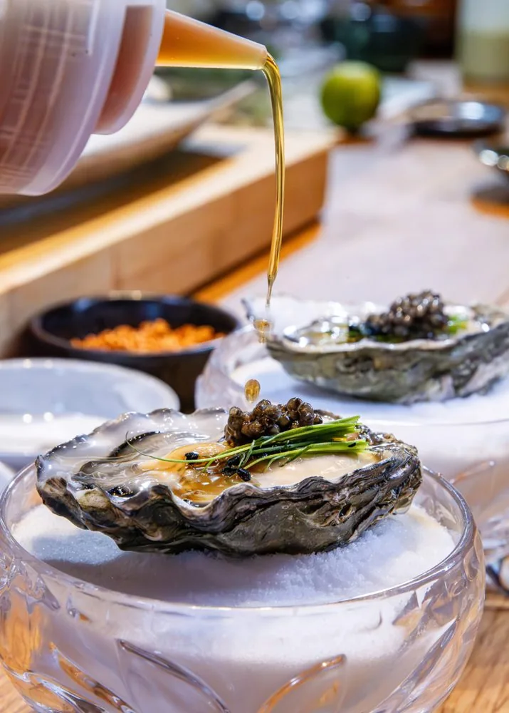
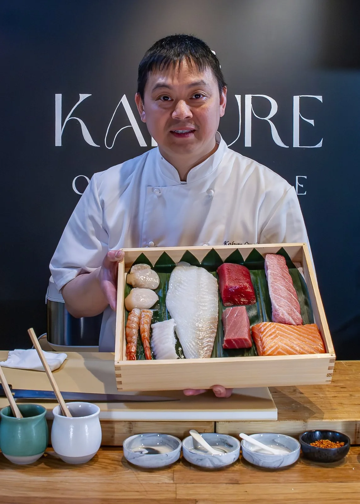
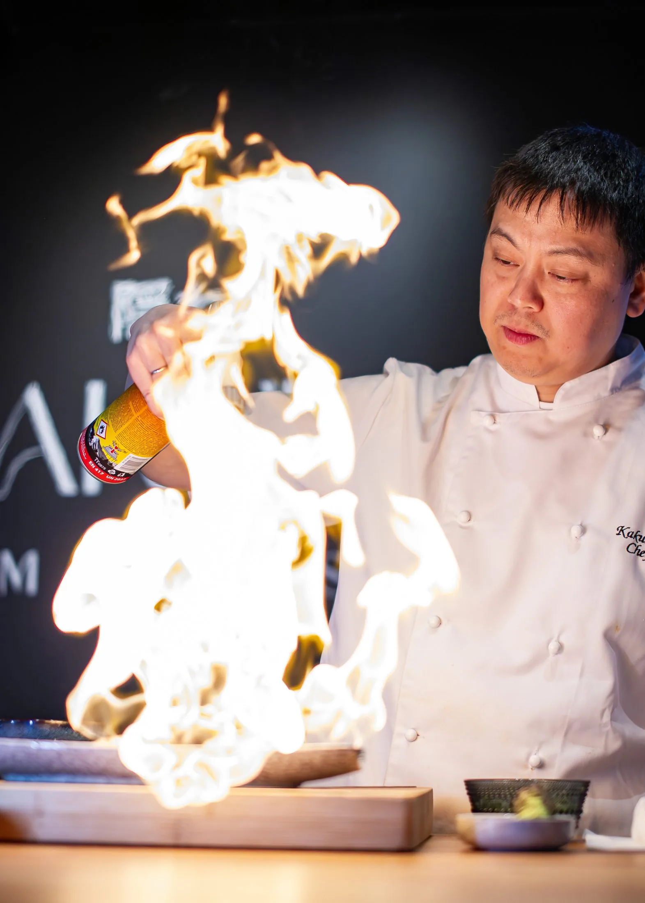
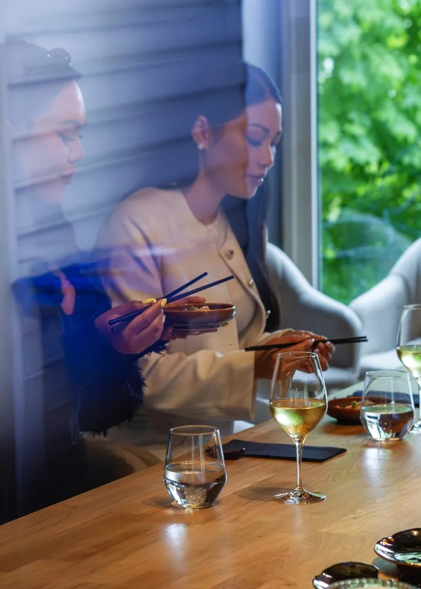
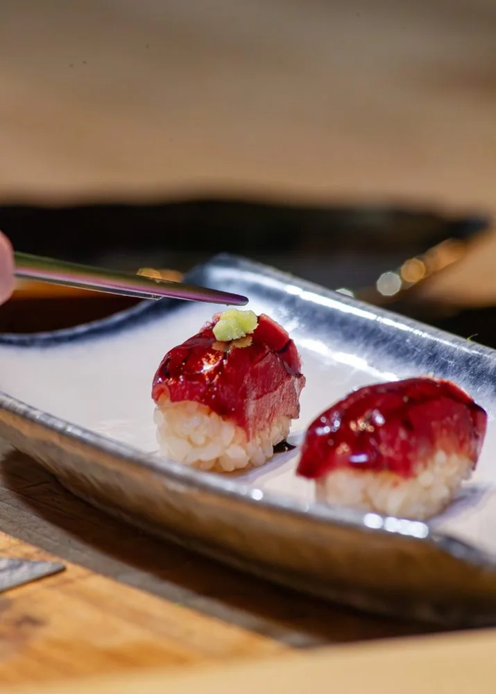
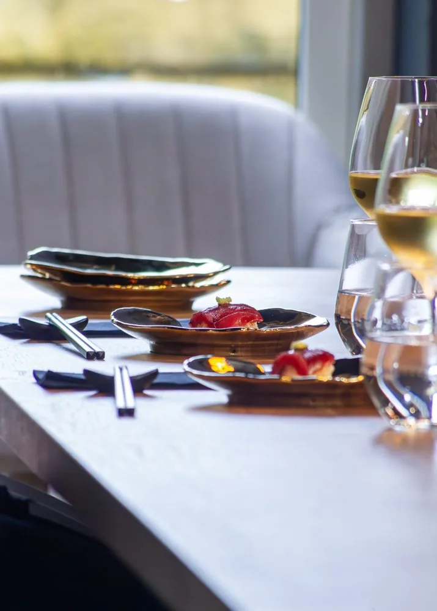

隠れ Omakase i Bergen
En skjult verdensklasse
omakaseopplevelse
En intim 15-retters smaksreise med klassisk Edomae-sushi og dristige Nikkei-smaker, servert i et skjult, privat rom med kun seks plasser.
お任せ — Stol på kokken
Bergens mest eksklusive
omakase‑opplevelse
Velkommen til Kakure Omakase, en intim 15-retters smaksreise som kombinerer klassisk Edomae-sushi med dristige Nikkei-smaker. Alt serveres i et skjult, privat rom med kun seks plasser, midt i hjertet av Bergen. Skapt av en mesterkokk med nærmere 20 års internasjonal erfaring: en kulinarisk reise gjennom Japan, levert med presisjon, lidenskap og personlighet.
Her får du en nøye kuratert smaksopplevelse hvor hver rett er balansert med tanke på smak, tekstur og presentasjon. Inspirert av stilene fra Nobu og Chotto Matte byr vi på en meny som overrasker og begeistrer.

Konseptet
Japanske røtter
Kappo-stil omakase kombinerer kunstferdigheten i tradisjonell japansk matlaging med intimiteten i en «chef's table»-opplevelse. Gjestene får en progresjon av sesongbaserte retter tilberedt med ulike teknikker: Robatayaki (grilling), Nimono (trekking), Agemono (fritering), Sashimimono (sashimi) og andre nøye utformede tilberedninger.
Opplevelsen avsluttes med Chef Akiras moderne Edomae-stil nigiri-sushi, som fremhever de beste sjømatene og perfekt balansert sushiris på sitt optimale smakspunkt.
En reise gjennom årstidene, én rett om gangen.

Om kokken
Møt kokken bak disken
Kokken bak Kakure Omakase har fulgt en kompromissløs lidenskap for sushi i over 15 år, på tvers av storbyer, kulturer og prestisjerestauranter. Eventyret startet i Hongkong på den anerkjente sushirestauranten Sen-Ryo, før reisen gikk videre til London, hvor han jobbet på seks ulike japanske restauranter, inkludert kjente navn som Nobu Mayfair, Zuma, Roka, Sticks'n'Sushi og Chotto Matte.
I 2011 var Chef Akira en del av åpningsteamet for den første Sabi Sushi i Stavanger og Sushi Bar i Trondheim. Siden den gang har han bidratt til sushikjøkken i verdensklasse: fra Bushido i Bahrain til Sabi Omakase Enso i Stavanger, Nama Sushi i Bergen, Nodee Sky i Oslo og Omakase Hamar ved Chef Akira i Hamar.
Med erfaring fra over 25 restauranter og en urokkelig dedikasjon til håndverket, åpnet Chef Akira sitt 26. avdeling 1. mai 2025: Kakure Omakase, en intim sushireise sentrert rundt håndverk, førsteklasses ingredienser og ro.
Opplevelsen
Et utvalg øyeblikk fra disken




隠れ
Book bordet ditt
Kun seks plasser, én sitting av gangen. Book i god tid for å sikre kvelden din.
5003 Bergen